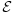
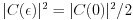

GWignerFit Manual
Copyright © 2004, 2005, 2006, 2007, 2008, 2009 Florian Schäfer
Permission is granted to copy, distribute and/or modify this document under the terms of the GNU Free Documentation License (GFDL), Version 1.1 or any later version published by the Free Software Foundation with no Invariant Sections, no Front-Cover Texts, and no Back-Cover Texts. You can find a copy of the GFDL at this link or in the file COPYING-DOCS distributed with this manual.
DOCUMENT AND MODIFIED VERSIONS OF THE DOCUMENT ARE PROVIDED UNDER THE TERMS OF THE GNU FREE DOCUMENTATION LICENSE WITH THE FURTHER UNDERSTANDING THAT:
DOCUMENT IS PROVIDED ON AN "AS IS" BASIS, WITHOUT WARRANTY OF ANY KIND, EITHER EXPRESSED OR IMPLIED, INCLUDING, WITHOUT LIMITATION, WARRANTIES THAT THE DOCUMENT OR MODIFIED VERSION OF THE DOCUMENT IS FREE OF DEFECTS MERCHANTABLE, FIT FOR A PARTICULAR PURPOSE OR NON-INFRINGING. THE ENTIRE RISK AS TO THE QUALITY, ACCURACY, AND PERFORMANCE OF THE DOCUMENT OR MODIFIED VERSION OF THE DOCUMENT IS WITH YOU. SHOULD ANY DOCUMENT OR MODIFIED VERSION PROVE DEFECTIVE IN ANY RESPECT, YOU (NOT THE INITIAL WRITER, AUTHOR OR ANY CONTRIBUTOR) ASSUME THE COST OF ANY NECESSARY SERVICING, REPAIR OR CORRECTION. THIS DISCLAIMER OF WARRANTY CONSTITUTES AN ESSENTIAL PART OF THIS LICENSE. NO USE OF ANY DOCUMENT OR MODIFIED VERSION OF THE DOCUMENT IS AUTHORIZED HEREUNDER EXCEPT UNDER THIS DISCLAIMER; AND
UNDER NO CIRCUMSTANCES AND UNDER NO LEGAL THEORY, WHETHER IN TORT (INCLUDING NEGLIGENCE), CONTRACT, OR OTHERWISE, SHALL THE AUTHOR, INITIAL WRITER, ANY CONTRIBUTOR, OR ANY DISTRIBUTOR OF THE DOCUMENT OR MODIFIED VERSION OF THE DOCUMENT, OR ANY SUPPLIER OF ANY OF SUCH PARTIES, BE LIABLE TO ANY PERSON FOR ANY DIRECT, INDIRECT, SPECIAL, INCIDENTAL, OR CONSEQUENTIAL DAMAGES OF ANY CHARACTER INCLUDING, WITHOUT LIMITATION, DAMAGES FOR LOSS OF GOODWILL, WORK STOPPAGE, COMPUTER FAILURE OR MALFUNCTION, OR ANY AND ALL OTHER DAMAGES OR LOSSES ARISING OUT OF OR RELATING TO USE OF THE DOCUMENT AND MODIFIED VERSIONS OF THE DOCUMENT, EVEN IF SUCH PARTY SHALL HAVE BEEN INFORMED OF THE POSSIBILITY OF SUCH DAMAGES.
Feedback
To report a bug or make a suggestion regarding the GWignerFit application or
this manual, please contact the author via electronic mail
<schaefer@ikp.tu-darmstadt.de>.
- Table of Contents
- 1. Introduction
- 2. Getting Started
- 3. The Menubar
- 3.1. The File menu
- 3.2. The Spectrum menu
- 3.3. The Analyze menu
- 3.4. The View menu
- 3.5. The Help menu
- 4. Handling datasets
- 5. Load and Save your Work
- 5.1. Structure of gwf files
- 5.2. Save a Session
- 5.3. Load a Session
- 5.4. Backup Files
- 6. Work on the Spectrum
- 7. Merge Resonance Lists
- 8. Working in the Time Domain
- 9. Statistics
- 10. Measure Data directly from the Network Analyzer
- 11. Customize GWignerFit
- 12. Known Bugs and Limitations
- 13. About GWignerFit
1. Introduction
GWignerFit provides an easy to use interface to analyze complex spectra of microwave resonators taken with vectorial network analyzers such as the HP8510C. Its primary aim is to provide a means to fit a theoretical curve to a given dataset in order to extract crucial parameters such as resonance frequencies and widths.
Some of GWignerFit's features:
Versatile methods of data visualization. GWignerFit can read industry standard Touchstone® spectrum datafiles as well its own datafile format.
Support for transmission and reflection spectra.
"Unlimited" number of resonances for the theory.
Support for multiprocessor systems.
Possibility to overlay several spectra for better comparison.
Implemented Fast Fourier Transform for visualization of the time domain.
The most common spectral statistics can be calculated and visualized in real time.
A special merge module allows an easy comparison of resonance lists in order to build a complete set of resonances.
Spectral data can be measured directly through a HP8510 compatible network analyzer.
Raw, uncalibrated spectrum data can be calibrated offline or online utilizing a HP8510 compatible network analyzer.
2. Getting Started
This section will show you the very first steps with GWignerFit. It will explain how to start the application and give a short overview about how the main window is structured.
2.1. To Start GWignerFit
The best way to start GWignerFit is to start it from a command line. To do this open a terminal and type the following command, then press Return:
gwignerfit datafile1.dat datafile2.dat
where the optional filenames datafileX.dat can be the names of resonance datafiles that you want to use. A description of the required datafile format can be found in Section 4.1.1.
GWignerFit opens the first datafile as the main dataset. Each further file will be added as an overlayed graph (see Section 4.3 for further information on overlays).
2.2. When You Start GWignerFit
When you start GWignerFit, the window shown in Figure 1 is displayed.
The GWignerFit main window contains the following elements:
- Window title
The title displays the title of the application, GWignerFit, the name of the currently loaded dataset or session file and an asterisk if there are any unsaved changes.
- Menubar
The menus of the menubar contain all of the commands you need in order to work with GWignerFit. Learn more about the menubar in Section 3.
- Graph view area
This is perhaps the most important part of the main window of GWignerFit. If a dataset is loaded it will be displayed here along with the theoretical curve and any overlayed datasets. A detailed description of the graph view area can be found in Section 4.4.
- Parameter area
All relevant parameters are displayed here. Global parameters (Phase, Scale, Tau, Min, Max) are displayed on the left side. The individual parameters for each resonance (frequency, width, amplitude, phase) will be shown on the table at the right. The parameter area is explained in Section 6.2.
- Statusbar
The statusbar displays information about the current activities of GWignerFit and it gives feedback about the result of a operation, i.e. saving a file. Each message the statusbar holds will be cleared after five seconds.
3. The Menubar
The Menubar allows access to nearly all relevant actions of GWignerFit.
3.1. The File menu
With the File menu you can save and load your work, import datafiles, export your results into various formats and quit GWignerFit. In detail you can choose one of the following actions:
- New
Basically GWignerFit is resetted to the state it would be in after starting it without any command line arguments. That is, all resonances are deleted as well as the global parameters, all datasets are removed from the memory and the graph view area is cleared.
- Open...
Use this menuitem to open a GWignerFit session created by GWignerFit's save function.
- Save
With Save the current state of your GWignerFit session will be saved. The name of the dataset file, the overlayed files, the global parameters and the parameters of the individual resonances will be saved. If no file and section name have been chosen yet, you will be prompted for them, otherwise their current values will be taken and the corresponding section will be overwritten with your current session. Please refer to Section 5 for further information on GWignerFit's session files.
- Save as...
This does in principle the same as Save but you will always be asked for a new filename and a new section name.
- Import data...
This is perhaps one of the most important items in the File menu. You can import a dataset that you want to work with or a list with resonance frequencies. See Section 4.1 and Section 4.2 for further information on datafiles.
- Export
For further usage of the knowledge gained by using GWignerFit you can export various aspects of your work here, see Section 4.5.
- Comment...
This function will open a small text entry dialog. You can use it to enter arbitrary information. The commentary is being saved together with all the other data of a GWignerFit session if you use the Save function mentioned above.
- Quit
Quit the application.
3.2. The Spectrum menu
This menu holds actions that are related to the adding of resonances to the theory and fitting them. You may think of the Spectrum menu as doing work on the spectrum. In detail you can choose one of the following actions:
- Fit spectrum
This is what GWignerFit is all about. To take a set of parameters and fit a theoretical curve to the dataset. With Fit spectrum the actual fitting process is initiated. You can learn more about the fit in Section 6.4.
- Undo last fit
Sometimes the theory will look worse after a fit has been performed, use undo to revert to the state before the fit. Undo last fit will always restore the parameter settings from before the last fit. You cannot use undo if no fit has been done yet or if a new dataset has been imported meanwhile.
- Add resonance by click
Add a single resonance to the list of resonances. After choosing this item you will have to click with the left mouse button on the graph at the frequency where a new resonance should be added. You are allowed to change the view for this. GWignerFit will then try to calculate some reasonable initial parameters for this resonance and add it to the list.
- Find isolated resonances
If the spectrum contains many resonances that are to be fitted it may be very inconvenient to add them all by hand. Use Find isolated resonances to add all resonances above a certain threshold.
GWignerFit now expects you to mark this threshold on the graph. Click with the left mouse button on the graph to mark the height that should be this threshold. GWignerFit will now try to identify all resonances that are higher than this value. For this operation only the frequency range between the Min- and the Max-frequency is considered. Read Section 6.3 for further information.
- Estimate global parameters
Use this to re-estimate the three global parameters Phase, Scale and Tau. The results may not be very exact in may cases but they may provide a starting point.
- Set frequency window
There are many operations that are not performed on the whole frequency range of the dataset but only on a smaller part of it. This range is determined by the Min- and Max-frequency global parameters. Use Set frequency window to change this window.
After selecting this item you will have to mark those to frequencies with a click of the left mouse button on the graph. It is mandatory to first mark the lower frequency and then the higher frequency. You are free to change the view during this operation.
- Reflection and Transmission
GWignerFit tries to guess what kind of spectrum is currently loaded during importing it. Sometimes the algorithm will not decide correctly. Use those two radio-menuitems to change the spectrum type by hand.
- Overlay spectra...
It is possible to view more than just on spectrum at the same time. This may be handy if you want to compare certain aspects of several spectra. This menuitem opens the dialog to manage those overlayed spectra. You cannot select this option if no main spectrum has been imported yet. See Section 4.3 for an in depth treatment of overlays.
- Calibrate spectrum...
This opens the calibration dialog to calibrate transmission and reflection spectra, see Section 6.8 for a detailed explanation of the process of data calibration.
- Preferences...
There are some preferences that change the general behavior of GWignerFit. You can change them in the preferences dialog, see Section 11.
3.3. The Analyze menu
The Analyze menu allows you to perform an even deeper analysis of you spectrum that have nothing to do with finding and fitting resonances in the first place. In detail you can choose one of the following actions:
- Measure distance
To measure the frequency interval between two arbitrary points on the spectrum select this item and then click with the left mouse button on the two frequency positions between which you want to know the distance. You may select the higher frequency first, GWignerFit will always calculate the absolute value of the difference. Once again, you are free to change the view during this operation.
- Integrate Spectrum
Integrate Spectrum calculates the area under the graph of the main dataset in the given frequency range. You will have to mark the frequency boundaries with clicks of the left mouse button on the graph. You may select the higher frequency first, GWignerFit will always calculate the absolute value of the integral. Once again, you are free to change the view during this operation.
- Fourier transform all
The mathematical operation to change between the frequency domain and the time domain is a Fourier transform. Selecting this item you will open a new window that displays the Fourier transformed graphs. An extensive explanation of the time domain and the Fourier transform window is given Section 8.
- Fourier transform frqwin
This does in principle the same as Fourier transform. However, it does only take those data values into account that are within the selected Min- and Max-frequency window.
- Spectral statistics
This module evaluates the most common statistical properties of resonance lists. Your current list of resonance frequencies will be the source of the analysis. See Section 9.2 for a thorough explanation of this function.
- Merge resonance lists
Use this module if you have several resonance lists and want to merge them into one to get a complete resonance level scheme. A detailed description of this function can be found in Section 7.
- Fourier components
If you have done transmission measurements in small cavities or using bad cables you may get annoying periodic transmission modulations that cannot be described by the "normal" theory of complex Wigner functions. Use this dialog to identify those fluctuations in the time domain and to take them into account as additional Fourier components. See Section 6.6 for more detailed explanations.
- Autocorrelation function
This function calculates the so called autocorrelation function of the currently active main dataset. It provides the correlation length and additionally some further statistical data for the spectrum. Further explanations can be found in Section 9.1.
3.4. The View menu
This menu contains all actions that are connected to what the graph view area shows you. You can choose one of the following actions:
- Absolute value
This is the standard view. GWignerFit calculates the absolute values of the given complex parameter sets and displays them. The values are not squared.
- Real part
Displays that real part of each graph.
- Imaginary part
Displays that imaginary part of each graph.
- Phase
Displays that phase of the complex values. GWignerFit calculates it by taking the arctan of the quotient between imaginary and real part of the datasets. The signs of both arguments are used to determine the quadrant of the result that is, the phase takes all values between -π and +π.
- Log power in dB
The values calculated with the Absolute value setting are being squared and converted into a logarithmic scale, the dB scale. The ordinate now reads the values in dB. To prevent possible singularities all values of zero are defined to be -100 dB and negative values are reversed in sign before converting them to dB.
- View theory
Check or uncheck this option to enable or disable the display of the blue theory graph in the main graph view area as well in the graph of the time spectrum (see Section 8). The start-up default of GWignerFit is to not display the theory graph. It will, however, be automatically be shown if a resonance gets added so that the theory graph becomes meaningful. This default behavior can in any case be overruled with this menu item.
- View difference
When activating this checkbox the graph view area will not show the individual graphs for the main dataset and the theory any more but calculate the difference between the to datasets first and display the result. The difference is calculated by subtracting the complex values of the theory graph from the complex values of the main dataset. The graph of this difference is purple in color.
- Zoom selection
Changes the range of the displayed frequencies so that the whole frequency window between the Min- and Max-frequency fits nicely onto the graph view area.
3.5. The Help menu
This menu is supposed to give the user some help in his working with GWignerFit, however, right now its functionality is rather limited. Only two menuitems are present at the moment:
- User manual...
GWignerFit ships with an extensive user manual, that is the one you are reading right now. With this option you will get a hint where to find the HTML version of the documentation on your system.
- About...
This item will open the obligatory hall of fame window.
4. Handling datasets
It is GWignerFit's purpose to make the work with measured data as comfortable as possible. This section will explain how to load some data into GWignerFit, how to use the graph view effectively and how to export your results again.
4.1. Import Spectrum Data
The starting point for many of your GWignerFit sessions will be to import some spectrum data. You can do this by choosing File->Import->Spectrum data... (the shortcut is Ctrl-I) from the menubar. A file selector will open where you can browse to and select the name of the file that contains the dataset. If the selected datafile follows the S2P standard, that is it includes information on a full 2×2 measurement, GWignerFit will then bring up a new dialog. Use this dialog to choose which scattering parameter actually to import. The current version of GWignerFit cannot import all four matrix elements at once.
You can either import the raw spectrum data of the frequency domain or the Fourier transformed data of a time domain spectrum (see Section 8). Both types of spectra must abide by the datafile standard defined in Section 4.1.1. The preferred extension for datafiles is .s1p, .s2p or .dat. All datafiles can be compressed with the zlib algorithm, too, which GWignerFit can decompress on the fly. This algorithm is used for example by the Unix gzip command. Compressed datafiles should have the additional suffix .gz.
4.1.1. Datafile Format
GWignerFit expects all datafiles to abide by the Touchstone® industry standard (as defined in Rev 1.1, filename suffixes .s1p or .s2p) or to follow the following rules (which are similar to a special variant of the S1P standard):
All lines containing actual data must consist of three floating numbers (for the programmers: long floats, a point as the decimal separator) divided by white space, that is any combination of spaces and tabs. The first column represents the frequency measured in Hz or the time of the FFT data in nanoseconds. The second and third column hold the real and imaginary value of the complex S-Parameter value for this frequency or of the complex Fourier coefficient for this time.
A line can start with a hash (a '#'). Those lines will be ignored by GWignerFit and can thus be used for comments.
The file must not contain any other lines than those of the type above. This includes that there must not be any empty lines in the datafile.
GWignerFit expects the frequency/time intervals between two successive lines to be equal, i.e. plus 200 kHz between each frequency dataset.
The following applies only to time domain data: The first two lines of the datafile must look very much like this:
# FFT of 'filename.dat' measured data # Source frequency range: 2.000000000 - 8.438000000 GHz
The string filename.dat should hold the filename of the original frequency domain dataset. The values of the second line, 2.000000000 and 8.438000000 in this example, must be equal to the first and last frequency datapoint of the original datafile.
The number of datapoints in the file must be one more than a power of two (like 3, 5, 9, 17, 33) and the time range must be centered around time t=0 ns.
However, you do not need to worry too much about this datafile format. If you use GWignerFit's export function (see Section 8.1.1) everything will be set up correctly.
A valid frequency domain spectrum datafile could look like this:
# A test measurement 8026000000.000000 0.027552 -0.001667 8026200000.000000 -0.027308 -0.000603 8026400000.000000 -0.027080 0.000438 8026600000.000000 -0.026746 0.001457 |
A valid time domain spectrum datafile could start like this:
# FFT of 'test_measurement.dat' measured data # Source frequency range: 1.910000000 - 2.598564295 GHz # t[ns] Re Im -580.918882 -0.710359 0.388424 -579.784275 -0.517703 -0.016882 -578.649667 -0.205626 -0.183095 -577.515060 0.263812 0.299154 |
4.2. Import a Resonance Frequency List
It will eventually happen that you already have a list with resonance frequencies that you would like to use for your further work (i.e. for a spectral analysis, see Section 9.2). You can import such a list with the function File->Import->Resonance list... from the menubar of the main window. The resonance list file can either have been created by GWignerFit's export function (see Section 4.5) or it can be "self made". If the file has not been created by GWignerFit it will have to stick to the following rules:
All lines that are either empty (not even white space) or start with a hash ("#") will be ignored by GWignerFit.
The resonance information itself may be formatted in several ways. The following column layouts are possible:
<frequency>
<ID> <frequency>
<frequency> <width> <amplitude> <phase>
<ID> <frequency> <width> <amplitude> <phase>
An ID column must consist of integer numbers that increase by one with each line. Frequencies can either be in Hz or in GHz. Widths must be in MHz and phase information must be given in degree. The decimal separator has to be a period. GWignerFit will try to outsmart itself and autodetect what format the datafile follows.
The imported resonances will be added to your resonance list. In the case that not all resonance parameters are defined through the imported file, the width, amplitude and phase parameters will be set to some default value so that the resonances will be visible and a fit will not fail with a numerical exception. GWignerFit will, however, not try to find more sensible values for those parameters, this is left up to you. A resonance frequency list can be imported, too, if there is no main spectrum datafile loaded.
4.3. Overlay Data
Besides having the main dataset and the theoretical graph you can add further datafiles to your graph. GWignerFit calls those graphs overlays. This section will show you how to use them effectively.
For all operations with overlays you will need to open the Overlay Window, you can do this by choosing Spectrum->Overlay spectra... from the menubar.
The Overlay Window (as shown in Figure 2) contains the following elements:
- List of all overlays
This list shows the filenames of all overlayed datasets that are currently loaded and therefore displayed, too. Whenever you intend to do something with a dataset select it in this list. It is possible to select several datasets at the same time.
Each filename has a colored bar prepended. This bar shows the color of the dataset in the graph (with a light gray as the default color). You can do a double click on a row to change this color. Those graphs that are selected in the list will be drawn in a darker variant of this color.
- OK
Closes the Overlay Window. Otherwise nothing special happens.
- Add
Adds a new dataset to the list of overlayed graphs. Pressing this button will open a file selector dialog where you can select one or several datasets to be loaded. The overlayed datasets do not need to have the same frequency points as the main dataset.
You can add a time domain spectrum (see Section 4.1.1 for a description of the required file format) as an overlay, too. GWignerFit will convert it into the frequency domain before adding it.
- Remove
For Remove to work, you will first have to select those overlays in the overlay list that you want to remove from the graph. After pressing the Remove button the selected datasets will be removed. The files will not be removed physically, they are just removed from the memory of GWignerFit.
- Activate
With Activate you can exchange the current main dataset with an overlayed graph. To do this you have to select the overlay filename from the overlay list (select exactly one filename) and click the Activate button. The selected overlay graph will become the new main dataset. The former main dataset will replace the former overlay dataset in the overlay list.
Though this feature calls itself "overlay", those graphs actually appear below all other graphs. The default is that all overlays are displayed in a light gray color, however, all overlays that are currently selected in the overlay list are shown in a darker shade of gray. This way you can more easily distinguish several overlays if several datasets are overlayed. To change the color of a graph you can open a color selection dialog with a double click on filename in the list.
Everything that has been said about overlays in the main graph view area applies to the Fourier Transform window (see Section 8) as well.
4.4. The Graph view area
To an unfamiliar user GWignerFit's graph view area may seem a bit confusing at first glance but once you have learned what the different lines are for, it should be quite easy to understand.
The meaning of the different lines in Figure 3:
Black: The coordinate axes are in black. The abscissa shows the frequency in GHz, the ordinate is in this screenshot the squared transmission in dB.
Red: The main dataset graph is in red.
Blue: The theory graph, if enabled (see View theory in Section 3.4), is colored blue.
Grey: Grey is the color for all overlayed graphs. You can see in the screenshot that there are two gray graphs which translate into two additional overlayed datasets.
Orange: The two vertical orange lines mark the boundaries of the frequency window. They correspond to the Min and Max values in the global parameter area.
Green: As you can see in the resonance list there is one resonance currently selected (it has a blue background). A selected resonance is marked with a green bar in the graph view. The shade of green represents the strength of a single Wigner resonance with a width of the same value as the selected resonance. In short: The green bar visualizes the position and width of the currently selected resonance.
4.4.1. Navigating the Graph view
You have got several options how to influence the part of the graph that should be shown. You can zoom both axes independently and move the whole viewport around. For nearly all operations a mouse is needed. For optimal handling a three-button mouse with a scroll-wheel is recommended. Working with a two or three button mouse is possible, too, but it is not very comfortable this way.
Changing the view with the mouse:
- Zoom
You can zoom into and out of the graph using the scroll-wheel of your mouse. To zoom around a certain point position the mouse crosshairs on this point and zoom using the wheel. Scrolling up translates into zooming into the graph whereas scrolling down does the opposite. Zooming this way will only affect the frequency axis, the ordinate will be scaled automatically. The frequency marked by the mouse crosshairs will always stay at the same position on the screen. Holding Ctrl while scrolling will zoom the ordinate without changing the frequency axis. If you want to zoom the abscissa (that is the frequency axis) without affecting the ordinate scaling press Shift while using the scroll-wheel. You can also use Shift-Lock if you do not want to keep Shift pressed all the time.
If you cannot use a scroll-wheel you can zoom in using Shift + right mouse button and zoom out using Ctrl + right mouse button. You will not be able to zoom the ordinate this way though.
All graphs represent discrete datapoints. The lines you can see do just connect those points by straight lines, they should "guide the eye". Once you have zoomed so much into the graph that the distance between two adjacent datapoints is more than 20 pixel, GWignerFit marks the positions of the actual datapoints by short vertical lines. If you do not like this behavior see Section 11 on how to disable those datapoint markers.
- Jumping around
Pressing the middle mouse button will center the graph on the frequency that is currently marked by the mouse crosshairs.
- Zoom to frequency window
To adjust the view in such a way that the whole graph inside the current frequency window (determined by the global Min and Max parameters) fits nicely onto the screen use View->Zoom selection or the corresponding keyboard shortcut S.
- View complete graph
Pressing Ctrl + middle mouse button will adjust the view so that the whole graph will be visible.
One final feature of the graph view area, though it has nothing to do with changing the viewport, should be mentioned here: You can click with the left mouse button anywhere on the graph to mark the position with a small cross. Beside the mark the coordinates of this point will be printed in a (x,y) like style. This is really useful if you want to get a better reading on some special positions on the graph. The mark is not permanent, it will be cleared the next time the graph is being redrawn.
4.5. Export your Data
Aside from saving your work as gwf files you can export only certain information, too. GWignerFit allows you to export selected parameters of your resonances in a tabular fashion, a dataset of the theoretical graph can be created and the current view of the graph view area can be saved as a postscript file.
You can find the different export methods as a submenu of the File->Export menu. The three possible actions are:
- Resonance data...
If you want to export a certain parameter of all resonances, i.e. the widths of all resonances, you can use this function. The calculated standard deviations of the resonance parameters can be displayed, too (see Section 6.7). GWignerFit will open a window with a textview where the exported parameters are shown. Below this textview you can select what parameters are to be exported. You are free to select several parameters, i.e. frequency and width. The last checkbox enables the display of error the error estimates.
The textview will then display for each resonance a line which contains the selected parameters. If you have selected Add error estimates for each included parameter the errors for each parameter will be displayed in a column directly behind the parameter itself. The order of the list is determined by the current order of the resonance list of the main window. You can select the data now to copy and paste it into an application of your choice or you can use the Save button to save the content of the textview as plain text into a file of your choice.
- Theory Graph data...
This will open a file selection dialog asking you for the filename of the dataset that is to be exported. GWignerFit will write into this file the dataset of the complex theoretical graph. The format of this file is the same as for any other dataset that GWignerFit understands.
- Graph as postscript...
For documentation purposes it is sometimes very useful to take some kind of screenshot of a particular graph. This option allows you to save the currently visible graph as a postscript file.
The export function depends on the open source program gnuplot and thus only works if it is installed on your system in a location mentioned in your
PATHenvironment variable.The "Export graph to postscript" window contains the following elements (see Figure 4):
Path and Filename: This gives the filename of the postscript file to be created divided into its path and the filename itself. You can use the Select button to bring up a file selector dialog to select a filename.
Title: The title string will be displayed above the graph. Leave it empty if you do not want a title to be shown.
Footer: The footer will be included in a smaller font at the lower right of the graph. As you can see GWignerFit will show the name of the datafile here by default but you are free to enter an arbitrary string here, too. If you don't want to have a footer delete any text in the footer textentry.
Include theory graph: The blue theory graph will only be included in the postscript if this checkbox is checked.
Include overlay graphs: Overlayed graphs will only be included in the postscript if this checkbox is checked.
Create legend at: It is optional to include a legend in the postscript. The legend will mark the graphs as "data", "theory" and "overlay". To prevent the legend box from obscuring the graph you can either position it at the top right or at the bottom right of the graph.
4.6. Drag and drop support
GWignerFit supports drag and drop to import datafiles. This functionality is restricted to applications that support the Gtk way of drag and drop, that is all other Gtk and Gnome applications. QT applications which are common to KDE programs use another protocol for drag and drop and are therefore incompatible.
To import a datafile into GWignerFit just drag and drop it on its main application window. If no main dataset is loaded the file will be imported as a new main dataset. Otherwise it will be added as an overlayed dataset.
5. Load and Save your Work
This section explains the concept of saved GWignerFit sessions, how the files are structured and how to actually save and load them.
The preferred extension for all GWignerFit session files is .gwf which is short for GWignerFit. Though you are free to choose any filenames you wish it is recommended to stick to this convention. This manual assumes that saved sessions have the extension .gwf and will refer to them as "gwf files".
5.1. Structure of gwf files
GWignerFit session files are simple plain text files that are processed in a line oriented manner. A gwf file can store the state of several sessions. This is done by introducing sections. Each file can contain several sections where each section is an independent entity representing a saved GWignerFit session.
Each section has an unique label by which the section is identified by GWignerFit and presented to you as the user. A label may be any string (without line breaks). It is recommended that you give the label a meaningful name as it represents some part of your work.
The typical structure of a gwf file could look like this:
filename: cavity_1.gwf
sections:
1-4 GHz
4-8 GHz
full spectrum
test (strange resonances)
5.2. Save a Session
To save a session select File->Save as... from the menubar. A dialog will ask you for the label of the section. Enter the name and select OK. You will now see a file selector dialog where you can enter the filename of the gwf file. If no filename has been given to this session yet, GWignerFit will propose one by replacing the extension of the datafile by gwf. Press OK to continue. Pressing Cancel in any of the two last windows will abort the entire save process, no changes are being made to any files.
Depending on the filename you selected there are three possible ways how GWignerFit will continue:
The file does not exist. — A new file is created with the appropriate section.
The file exists but no section with the given label. — You will be asked whether GWignerFit should append a new section to the file or whether the operation should be aborted. The confirmation dialog can be disabled through the preferences, see Section 11.
The file exists and the section exists as well. — You will be asked whether GWignerFit should overwrite the section of the file or whether the operation should be aborted. GWignerFit will only change the relevant section. The rest of the file will stay unaffected.
Once you have done the steps above it is sufficient to use File->Save or Ctrl-S for a quick save with the same file and section names.
5.3. Load a Session
Loading a file is the reversed counterpart to saving it. Choose File->Load... from the menubar or press Ctrl-O and select the filename in the file selector. GWignerFit will now scan the file for available sections. It then displays a small dialog where you can select the label of the section to be loaded.
5.4. Backup Files
Each time you start a fit GWignerFit will try to make a backup of your current parameter set. A new file will be created with the name of your normal session file and an appended tilde ("~") character. In this file a section with the label of your current session will be created where the current state of GWignerFit will be saved. The backup file will be deleted if GWignerFit is closed properly or a new gwf file is opened.
Please note: The backup function will only work after you have created a gwf file by yourself. Otherwise GWignerFit cannot know where and under which name it should create a backup file.
Should you now have the need for a disaster recovery you can load the backup file as a normal GWignerFit gwf file and continue your work. The first thing you should do now is to save your work again with the correct filename.
6. Work on the Spectrum
This section will introduce the mathematics behind GWignerFit, teach you how to add resonances to your theory and how to fit them effectively. However, nothing replaces personal experience. You should just work with GWignerFit to find out what works best for you.
6.1. A Primer on Theory
In order to use GWignerFit effectively you should understand the model on which the theory is based and the meanings of the resulting parameters that need to be fitted. This section will try to explain the basic ideas.
You can interpret experiments with microwave resonators as scattering experiments: Energy is fed into the resonator through an input channel where it is subject to some complex interaction mechanism and eventually exits through a second antenna, the output channel. The transition amplitude between input channel b and output channel a can be written as
where the sum is taken over all resonances μ of the system and V is the interaction which couples the wavefunctions in the scattering channels to the scattering system itself (that is the resonator). The energies of the resonances are denoted by .
Adjusting the above equation to the experimental reality one arrives at a slightly different expression:

Please note the minus sign in front of the iΓμ/2 expression. This should normally be a plus sign. However, it turned out that spectra measured with a HP8510 VNA cannot be described by Equation 1 unless there is a negative sign in front of the width expression. It seems that the VNA uses a different sign convention to express phase differences than the "normal" scattering formalism. Additionally there is a plus sign in front of the sum over all resonance terms. This should normally be a minus sign but is chosen to be this way here so that reflection amplitudes have phases ϕμ around zero. Without this plus sign they would all be around 180 degree due to the minus sign in the denominator that has been explained above.
Equation 1 describes essentially the same thing as the raw scattering formula but adopts the typical parameters of an experiment and allows for unavoidable, additional contributions to the S-parameter. The S-parameter is a function of the stimulus frequency ν. The formula features three global parameters (s, α, τ), four parameters per resonance μ (νμ, Γμ, Aμ, ϕμ) and a further factor f(ν). The global parameters are described in Section 6.2.1 while Section 6.2.2 deals with the resonance parameters. The factor f(ν) is a complex function of the frequency and takes periodic transmission modulations into account, it is normally equal to unity and its absolute value does not exceed one. A more detailed description of f(ν) is given in Section 6.6.
6.2. The Resonance list
The first thing you need to know, is how the parameter area of the main application window works. Typically it may look like Figure 5.
6.2.1. The Global parameters area
The entries of the global parameters area are (cf. Equation 1 in Section 6.1):
Phase α: The global phase of the spectrum in degree. For transmission data this value is kind of arbitrary since it can be absorbed into the phase values of each resonance.
Scale s: The whole theory graph is multiplied by this scaling factor. As you can see, it is inactive for transmissions datasets.
Tau [ns] τ: This parameter adds a phase to the theory that increases linear in frequency. It may be interpreted as the time (hence its units in nanoseconds) the signal travels in the connecting cables. This effect is very important for uncalibrated transmission measurements. It can, however, be useful for (calibrated) reflection measurements, too.
Min [GHz]: The lower frequency boundary for the frequency window in GHz.
Max [GHz]: The upper frequency boundary for the frequency window in GHz.
Each value can be changed by yourself easily. Just change the value of the corresponding entry-box by overwriting it with a new one. Press Enter to accept the changes.
6.2.2. The Resonance data area:
This part of the main window shows a list of all resonances that the theory takes into account. Each resonance is defined by four parameters: its resonance frequency Aμ, the FWHM width Γμ, the amplitude Aμ and a phase factor ϕ. The last column of the list shows the quality value for the resonance obtained by dividing the resonance frequency through its width.
You can click on one of the parameter column headers to sort the list by the entries of this column.
The values of the parameters in the list can be changed in a rather direct way as well. First, select the resonance whose parameter you want to change. Then click once with the left mouse button on the value you want to modify and the appropriate cell will change into an entry field. You can now enter a new value. Press Enter to accept the changes or Esc to discard your changes.
6.2.3. Checkboxes behind parameters
Behind each global and checkbox parameter you will find a checkbox. This checkbox is very important for the fitting procedure. All parameters whose checkboxes are checked are free parameters to be optimized by the fitting algorithm. Those parameters with an unchecked box are considered static and will not be changed. This way you have got a high degree of control on the fitting process which is very important if you want to get good results. To change the state of a checkbox just click on it with the left mouse button.
The checkboxes of the resonance list can be toggled by clicking on the header above a column of resonances. This will cause all resonances outside the frequency window to be unchecked. The checkboxes of the resonances within will either all be checked or all be unchecked depending on whether there are currently more than half of them checked or unchecked. GWignerFit will thus try to check or uncheck them the way that would have been the most work for you if you would have done it by hand. This may sound complicated now but it is really rather simple. Just give it a try and see for yourself.
You can make a double click on a resonance row, too. This will have the same effect on this row that a click on the header of a column has for this column. This way one can quickly check or uncheck all resonance parameters of one row.
6.2.4. The Resonance data popup menu
If you click with the right mouse button somewhere on the resonance list area a popup menu (Figure 6) will appear allowing further manipulation of the resonance list.
The popup menu allows you to perform the following operations:
- Check all
Activates all checkboxes (all boxes are checked) of the resonance list. Thus all parameters are now considered "free" by the fitting algorithm.
- Uncheck all
Deactivates all checkboxes (all boxes are cleared) of the resonance list. Not a single resonance parameter would be changed in the next fitting procedure.
- Fit selected resonances
This is some kind of a shortcut if you only want to optimize the parameters of the currently selected resonances but don't want to uncheck the checkboxes of all other resonance parameters. Choosing this item will start a fitting process that considers only those parameters to be free that are a) of the currently selected resonances and b) whose checkboxes are checked. No global parameters will be changed during the fit.
- Remove resonances
Deletes the currently selected resonances from the resonance list and thus from the theory graph. The shortcut Delete may come in handy for this. You will get a confirmation dialog for this operation. To get rid of this precaution see the preferences (Section 11).
- Clear resonancelist
Clears the entire resonancelist, that is all resonances are removed. As this is a rather drastic step a confirmation dialog will ask you to confirm this operation.
- Add resonance by click
This is the same as selecting Spectrum->Add resonance by click.
- Add empty resonance
This will add a resonance to the list whose parameters are all set to zero. You can use this option if you want to add a resonance whose parameter you already know. Just add an empty resonance and adjust the parameters by hand as you wish.
6.3. Find and Add Resonances
The first step to reproduce your spectrum by a good theoretical curve is to add the resonances of the spectrum. You can either add resonances by hand, which may be rather tedious for large spectra, or you can let GWignerFit try to find them for you, which is rather inaccurate as GWignerFit is very likely to miss some resonances. The best way is probably to first use the resonance finder and to add the missed resonances by hand afterward.
The automatic resonance finder can be accessed via Spectrum->Find isolated resonances or by its shortcut Ctrl-R. You will now have to select a threshold on the graph. GWignerFit will then consider everything as one resonance that comes from below the threshold, rises above it and then goes below the threshold again. You can enhance your results by applying the resonance finder several times with different thresholds.
Do not wonder too much if the resonance finder aborts with the message "Resonance finder stopped due to abnormal behavior". This part of the code sometimes goes "berserk" and this message means that the finder has been aborted in order to prevent infinite loops. Sorry for the inconvenience.
You can now add the resonances still missing by hand. To add a new resonance at a certain frequency choose Spectrum->Add resonance by click or by its shortcut Ctrl-A (which you should really consider to remember, as you will need this function quite often). Then click on the graph at the frequency where a new resonance should be added. GWignerFit will now try to find some reasonable initial values for this resonance.
6.4. Fit!
Before starting the actual fitting procedure here are some things you should consider:
You should have added all relevant resonances in the frequency area you want to fit, of course.
Adjust the frequency window around the interesting area that all resonances fit nicely into it but do not choose it overly large as additional resonances in the dataset within the frequency window can "irritate" the algorithm. Furthermore using too big frequency windows will increase the time required for the fit unnecessarily.
Think about what parameters are to be made free and which should be kept fixed. The global parameters should only be fitted some times at the beginning of your work. Especially after changing the frequency window so that some of your already fitted theoretical resonances are outside of it, it is recommended to uncheck the boxes behind the global parameters. Changing the global parameters will affect all resonances but the fit algorithm is only aware of those inside the frequency window.
For the parameters of the resonance list a rule of thumb could be: Start from the right! That means that in a first run you should only make the phase a free parameter as a fit of the width will go grossly wrong if the resonance has a wrong phase. The next run should fit the phase and the amplitude. After this you could check the widths, too. Finally a last run should fit all parameters at once.
The scenario just described may give you good results in many cases but there is just no general rule. Go and experiment yourself and get a feeling of how things work.
OK, now it's time to rock! Let's fit!
To start the fitting procedure choose Spectrum->Fit spectrum or type the shortcut Ctrl-F. GWignerFit will now fit the theory to the datapoints within your selected frequency window by varying all parameters that you have selected to be free.
During the fit you will see a status window (like the one shown in Figure 7) which gives some information about the current state of the fit.
The content of the fit information window:
- Frequency range
Only datapoints of the main dataset whose frequencies are within this frequency range are taken into account for this fit. The range is identical to the frequency window you chose with the global Min and Max parameters.
- Number of datapoints
The frequency range as given above translates into the number of datapoints shown here. More points result in a longer computation.
- Free parameters
Every variable that GWignerFit is allowed to change during a fit is a free parameter. It is equal to the number of checked boxes in the parameter area of the main window (an exception to this is if you used Fit selected resonance).
- Current rms error
To give a measure of the quality of the fit, GWignerFit calculates the root mean square error after each iteration. It is the goal of the fit to minimize this value.
- Last iteration
The fit algorithm of GWignerFit uses the so called Marquard-Levenberg algorithm. It is an iterative method that tries to find the minimum of the rms error function. It implements varying step sizes in each iteration. If Last iteration states "success" the rms value could be reduced in the last iteration, otherwise "failure" is displayed. If the iteration has been successful it is accepted and the step size is reduced to allow for a finer search grid. Has the iteration "failed" its results are discarded and the step size is increased in order to look for a minimum that may be farther away in the parameter space.
- Progress bar
It gives a visual representation of the progress of the fit. By default GWignerFit uses 50 iterations for each fit. The text in the progress bar informs you on the number of the current iteration and how many iterations GWignerFit will try to calculate.
- Take current values
Should the fit take too long to complete or you just want to see the results right now you can stop the fit with this button. GWignerFit will then take the parameter set of the last iteration as the new dataset.
- Cancel
In case you really want to abort the fit without changing your parameter set press this Cancel button. The fit will be stopped at once and no changes to your parameters will be made.
One final note about fits: The author of GWignerFit has to admit that GWignerFit is not without errors and bugs. This is especially apparent if you use the fit function. If the program crashes during a fit do not despair but seek help in the automatic backup function. For further information please read Section 5.4.
6.5. Check your Fit results
After a fitting cycle has been successfully finished, that is either the maximal number of iterations has been reached or Take current values has been used GWignerFit applies some rough sanity checks on the new parameter set. Should a parameter be outside its sensible range you will be asked about what should be done by a dialog.
The content of the inspect resonance window (see Figure 8):
- Parameters of resonance
The frequency, width, amplitude and phase of the resonance that should be reviewed is shown. All values that GWignerFit thinks are unreasonable are marked in red.
- Take old parameters for this resonance
The parameters of this resonance will not be changed. Instead, the four old parameters will still be used.
- Use those parameters anyway
If you think those parameters are OK, use this option. GWignerFit will then use those values anyway.
- Skip entire fit, revert to old parameter set
No parameters will be changed (not even any global parameters). This is as if you would have aborted the whole fit before or as if you would not have fitted anything in the first place.
- OK
You have selected one of the three options above and want to execute it.
To make it easier for you to decide what to do, the main window will show you the corresponding resonance with its old parameters in the graph view area and the resonance list.
If you are, after the whole fit procedure is finished, not satisfied with the result of your fit you can still revert to the parameter set you had before the fit via Spectrum->Undo last fit or by typing the corresponding shortcut Ctrl-Z.
6.6. Handle Periodic Transmission Modulations
Using the methods described in the last sections a very good agreement between theory and data can normally be achieved. This may, however, not be true if the data describes small cavities. The absolute transmission is then likely to show the general resonance structure with small periodic modulations (one may call them "ripples"). They correspond to standing wave patterns that are a result of the cable lengths, the antennae used for coupling to the cavity and impedance mismatches between cavity and coaxial cable. Using bad cables may make things worse, too. Having a look at the time domain would reveal those signal travel times that contribute to those ripples. Those Fourier components can then be taken into account as a factor with additional complex exponential functions in the frequency domain. This is the factor f(ν) in Equation 1 in Section 6.1. It can be written as in Equation 2.
As you can see, f(ν) is just a Fourier series expansion that should be suitable for a general description of periodic fluctuations. The only constraint is given by the denominator which guarantees |f(ν)|≤1.
In GWignerFit the process of identifying the travel times and adding them to the theory is done in a special window, the Fourier components window. This window can be accessed with Analyze->Fourier components. You can see a screenshot in figure Figure 9. The window is divided into two parts: Timedomain view of spectra quotient and Current fourier components.
- Timedomain view of spectra quotient
This graph will help you to identify the required additional Fourier components. The red graph displays the Fourier transform of the quotient between the measured data and the theoretical graph of all fitted Wigner resonances. If this theory is correct, the data should be described perfectly and the resulting quotient should be one. The Fourier transform of one is a very high peak at t=0 sec. Any periodical deviations should result in a peak at another time value. To suppress the expected peak at zero, GWignerFit does not calculate the Fourier transform of the raw quotient but of one minus the quotient thus removing the expectation value from the data basis. The Fourier transform is only applied to the data between the global minimal and maximal frequency window to allow for a more detailed analysis.
The graph in the example screenshot (Figure 9) has at least three outstanding peaks: at 0, 26 and 32 sec. The peak at 0 sec exists, as the average value has not exactly been a real one, but rather something close to it. Therefore this peak has only been suppressed, not removed. The two other peaks are "real" periodic contributions. To add them to the new theory just click on the graph at the appropriate time value, GWignerFit will then try to come up with reasonable initial parameters for this contribution. Clicking anywhere will always add a new component, as long as the checkbox Add new fourier components by click on graph is activated. Otherwise it will just produce a mark on the graph reading the coordinate values. The Fourier transform of the sum of all Fourier components is displayed as the blue graph.
- Fourier components
Each Fourier component consists of three parameters (see Equation 2): a time value, an amplitude and a phase value. The time gives the position of the contribution in the above graph and can be interpreted as a travel time of a signal between the two network ports. Amplitude and phase value form a complex prefactor to the exponential function and determine the strength of the influence of the component. All those Fourier components build a sum of exponential functions that are normalized in such a way that its absolute value will for all frequencies always be smaller than 1. This guarantees a physical interpretation as a damping factor.
All parameters have the well known checkboxes behind them. With them you can once again select which parameters are to be included in a fit run (click the column header to change all checkboxes of the column at once). Those parameters are then optimized with the "normal" Wigner resonance parameters during a standard fit run. It is once again advisable to start with fitting the phase parameters alone. If the Fourier components window is closed, all parameters are considered to be fixed thus preventing GWignerFit to change parameters that you cannot see on the screen.
All that is left is to explain how to delete a Fourier component if it is no longer needed. This is done by selecting the appropriate row in the listview and pressing the Delete key.
Producing satisfying results with those Fourier components is not easy and gets harder the larger the frequency range for the fit gets. Fast oscillations correspond to large signal travel times. This is why you should start with contributions from large times. The bigger your frequency window gets, the more important are effects by long range oscillations, that is short signal times, thus more of them need to be included. As with the rest of this whole fitting business no manual can replace personal experience. Just get down to the work and try it for yourself.
6.7. Accuracy of fit parameters
What good is a fit result if you don't know the uncertainties of the final parameterset? The fit algorithm calculates a so called "covariance matrix" that can be used to gain information about the parameter uncertainties. GWignerFit gives you the possibility to have a look at those mathematically calculated error estimates. If the errors of the original dataset (the spectrum data from the network analyzer) have a Gaussian distribution, the calculated error estimates denote the standard deviation.
This standard deviation information is only available after a fit procedure completed successfully by itself, that means there must not have been a numerical error and the fit must not have been stopped by choosing Take current values or Cancel. In fact, GWignerFit is very picky about its error estimates. Any changes in the parameter area will invalidate them and a new fit run is required to update them.
The actual error estimates can be seen and used for further analysis through the export Resonance data... menu. See Section 4.5 for further explanations.
6.8. Spectrum calibration
Doing calibrated measurements with the HP8510C network analyzer is an altogether unpleasant task. To make the process simpler GWignerFit can perform an "offline" calibration of reflection and transmission data. The mathematics involved with the calibration are described in the PhD thesis by Michael Barth (Marburg, 2001), appendix A.2. Furthermore, GWignerFit can do "online" calibrations (simple reflection, full two-port and thru-reflection-line), too, by feeding the spectra data back to the HP8510C network analyzer.
For the calibration GWignerFit needs additional data which is obtained by measurements of certain standards. This data has to be available for each datapoint of your uncalibrated raw data. For reflection spectra you need calibration measurements with the open, close and load standard attached to the end of your coaxial cable. Transmission calibrations need a so called thru measurement (the two coaxial cables coming from and leading to the network analyzer are connected directly with each other) and an optional isolation measurement which means that both ports have to be isolated to determine the crosstalk.
The full two-port and thru-reflection-line (TRL) calibration methods, which are only available in "online" mode, are a bit more involved. The full two-port variant requires ten standard measurements: open, close and load reflection information for both ports and the full S-matrix of the thru. For a TRL calibration even more information has to be provided: You need a thru measurement and a reflection measurement (short or open standard) for each port. Additionally, a line, which is a transmission line with a finite length between the coaxial cables, is needed. For the HP 85056A 2.4 mm calibration kit this is just one of the short adapter pieces.
To perform the calibration open the calibration window via Spectrum->Calibrate spectrum.... This dialog is shown in Figure 10. It is divided into three parts to select the Calibration type and the Calibration method and to show the calibration Progress.
The Calibration type part consists of three notebooks for the three different calibration schemes. You can choose between a Reflection, a Transmission, a Full 2-port and a TRL calibration. For each type all the required datafiles must be specified, only the isolation data for transmission calibration is optional. You can either enter the filenames directly or use the Select buttons. Those will give you a file selector for the corresponding datafile. The calibrated dataset will be saved into the file given with the Output data file entry. The full 2-port calibration is a bit more complicated as it requires the full S-matrix as raw data input and outputs all four S-parameters, too. Additionally, ten standard measurements are required. Therefore, this notebook is itself subdivided into four additional ones (see Figure 10). The same applies to the TRL calibration, the data input is spread over five notebooks. However, the thru and line standards require — besides the full S-matrix — two datasets which are called a1 and a2 by GWignerFit. Those are special measurements of absolute power values the VNA requires for an online calibration. See Section 10 on how to measure them.
The Calibration method is either Offline or Online. Reflection calibrations can be done in both modes, transmission calibrations can only be done offline and full 2-port as well as TRL calibrations are only available via the online method. For online calibrations the host of the Ieee488Proxy has to be entered, see Section 10.1 for more information on how to connect GWignerFit to a HP8510C network analyzer. To start the calibration press the OK button. The progressbar informs you about the progress of the calibration. The calibrated data will be displayed in the main graph window after the calibration has finished, either as a new main dataset or as an overlay depending on the number of graphs already being displayed.
The offline reflection calibration algorithm needs some knowledge of the standards being used. Currently only the HP 85056A 2.4 mm calibration kit is supported by GWignerFit.
7. Merge Resonance Lists
A spectrum does only contain a part of the information of the measured resonator because the antennae do only probe the system at at most two different points. This makes the task of compiling complete resonance lists somewhat difficult as one has to make measurements using different antennae combinations, identify the visible resonances in each spectra and deduce the complete resonance list from those subsets. Though the basic problem cannot be overcome, GWignerFit includes a tool to simplify the last step of this process: To merge many resonance lists into one (hopefully) complete list.
This module, which works more or less independently from the rest of the program, can be accessed via Analyze->Merge resonance lists (or use the shortcut Ctrl-J). A screenshot of the corresponding window (with some work already done in it) is shown in Figure 11. It consists of five main elements:
- Menubar
Through this menubar all relevant actions can be started. Its elements will be discussed in Section 7.1.
- Resonance nodes view
This is the part of the window where most of the actual work is done. Each resonance of each resonance list is represented by a short blue line, and will be referred to as a node here. Orange lines connect nodes from different lists and symbolize that those nodes belong to the same physical resonance of the system. A much more detailed description of this is given in Section 7.2.
- Spectra graph
Sometimes the very abstract representation of the nodes view may not provide sufficient information to be able to decide which resonances belong together and which do not. The spectra graph displays the raw spectra corresponding to each resonance list. See Section 7.2 for more information.
- Resonance lists overview
This list has an entry for each resonance list that has been imported and is thus visualized in the nodes view. It displays the ID, the name of the GWignerFit session file and the number of resonances for each resonance list.
- Statusbar
The statusbar provides some feedback about what GWignerFit does and reports on the success or failure of many actions.
7.1. The Menubar of the Merge Window
This section will explain all menu entries that can be found in the menubar of the merge window.
7.1.1. The merge File menu
Through the File you can load and save earlier merge sessions, import resonance lists and export that result of your work, a merged resonance list.
- New
This will reset the merge window to the same state it has been in after you opened it. Your current changes in this window will be lost if they haven't been saved yet.
- Open
You can restore a complete merge session with the Open function. This must not be mixed with the session files created by the main save functionality of GWignerFit. If you have resonance and merge information in one file GWignerFit will only show you the merge sections, as the other are not of use here. Please read the explanation for the Save function, which comes next in this manual, too.
- Save
Just as with the main Save function of GWignerFit the complete current state of the merge window can be saved. The session files are structured in the same way as the "normal" session files, also called gwf files (see Section 5). You can use the same gwf file to store sections with resonance information and sections with merge information. The sections are internally marked so that GWignerFit can distinguish between both types to guarantee that nothing gets mixed up.
Warning: GWignerFit does not save the position of each resonance node. It just saves what resonance lists have been imported, what resonances have been deleted (see Section 7.1.3) and the links that have been created. This means that the original resonance sections must not be altered afterward (or only if you really know what you are doing) as this may invalidate your saved merge session.
You will only be asked for a section label and a filename the first time you use this function. On consecutive calls GWignerFit uses those values to overwrite the old section with the new state.
- Save As...
This function does in principle the same thing as the Save function explained above. It will, however, always ask for a section label and filename.
- Add resonance list
Before you can do anything with the merge window, resonance lists need to be imported. This is done with Add resonance list. The resonance list GWignerFit expects now is just a normal resonance section of a gwf file that has been created using the main save function of GWignerFit.
- Remove resonance list
This action will remove the resonance list which is currently selected in the "resonance lists overview". Any affected links will up updated accordingly. A convenient shortcut for this menu item is Delete.
- Export merged list
The whole merge module has been created to compile a single, complete list with all resonance frequencies from several measurements. Use this export function to save this list into a text file. It will contain the following information: A header with some information about what resonance lists have been included in this merge and two columns with a consecutively numbered ID and the actual resonance frequency. Each resonance frequency is calculated as the average between all resonances in a link group.
- Close window
This will just close the merge window, all unsaved changes will be lost. GWignerFit itself keeps on running.
7.1.2. The merge Links menu
All actions that concern the links between resonance nodes are collected in this menu.
- Add link
Resonance nodes that belong to the same physical resonance are linked together. This is done by choosing Add link and selecting the two nodes that should be linked together in the "resonance nodes view" (see Section 7.2. For this operation the ends of the blue lines representing the resonance node are sensitive to clicks with the left mouse button. If you get within some pixels of such a point with the mouse pointer a rectangle will be drawn around it as visual feedback.
- Delete link
Links that are not correct can be deleted with this function. The sensitive points in the "resonance nodes view" are again the ends of the resonance node lines. Click on those to delete a joining link.
- Delete all links
This action removes all links between all resonance nodes.
- Automatic merge
Drawing obvious links between some hundred resonances is tiring and error-prone. The Automatic merge tries to create links between resonance nodes that have, within their widths, the same frequencies. The algorithm used is not really that sophisticated, make sure to check its work. The automatic merger works best if no links are defined yet, as it considers only nodes that do not already have any links associated with them. Therefore this is typically the first action to be done after the required resonance lists have been added.
7.1.3. The merge Resonance menu
The entries of the Resonance menu provide functions that work on the resonance and frequency level. Information about individual resonances can be obtained, resonances can be removed from a list and frequency intervals can be measured.
- Highlight width
With this function you can get further information on a selected resonance. Choose this menu item and then click on the resonance node that you are interested in (for this operation the whole blue resonance node line is sensitive). Three things will happen then:
The width of the resonance will be visualized by a green bar in the "resonance nodes view". The width of this bar is exactly one FWHM.
The resonance frequency and width are numerically displayed behind the Selected resonance label.
The "spectra graph" zooms to the selected resonance, the corresponding spectrum is drawn in a darker color. Again a green bar marks the FWHM of the resonance.
A very convenient shortcut for highlighting a resonance is to use Ctrl + left mouse button on a resonance node.
- Remove resonance
You will notice that some spectra can only be fitted by adding "ghost" resonances. Resonances that should not correspond to any physical resonances but are just needed to account for background effects or miscalibration. Those resonances are typically much broader that the "real" ones. As those resonances should of course not be included in the merged list they need to be removed.
To remove such a "ghost" resonance select Remove resonance and click on the corresponding resonance node. For this operation the whole blue line is sensitive.
- Measure distance
This is well the known function most of GWignerFit's graphical displays feature. Click on two positions on the "resonance nodes view" and GWignerFit will display the frequency difference between the two points. Note: This function does not work with the "spectra graph".
7.1.4. The merge View menu
You can change the appearance of the spectra graph with the options from this menu. The possible actions are:
- Normal scale
Use this menuitem to view absolute values in the spectra graph in a linear scale.
- Log scale
With this option set the ordinate of the spectra graph will have a logarithmic scale thus displaying the power spectrum in dB.
7.2. How to do a Merge
This section will give you a detailed step-by-step instruction of how to do a complete merge.
After opening the merge window (Analyze->Merge resonance lists) the first step is to import the resonance lists that are to be merged. This is done with File->Add resonance list. You have to choose a .gwf file there with resonance information created by GWignerFit. After selecting the label of the section GWignerFit reads all resonances and the filename of the measured spectrum. The spectrum is then loaded and displayed in the "spectra graph". All resonances in this section build a new resonance list that is visualized in the "resonance nodes view". This view has a vertical blue line for each resonance. The abscissa gives the frequency in GHz, the ordinate just enumerates the resonance lists. Do this import procedure for all lists that you wish to merge.
Now that all resonances are imported it is time to introduce two terms: node and link. Each resonance forms a node and links can be drawn between nodes. A node is represented by a blue line, a link by an orange one in the "resonance nodes view". The idea is that all nodes which are connected by links represent the same physical resonance and thus need to be merged into one resonance later. You need to know how to create links now. The first step will normally be to let GWignerFit create an initial set of links for you. This is done by Links->Automatic merge. The result will by no means be perfect but it should provide a good starting point for your further work. You can manipulate links with the Add link and Delete link functions of the Links menu. The Add link function requires you to click on two nodes that you want to connect, that is the endpoints of the blue lines. A link is being deleted with the Delete link function. Click on an endpoint of a link and it will be removed.
In many cases the information of the "resonance nodes view" will not be sufficient to decide where a resonance belongs to. This is where resonance highlighting and the "spectra graph" come into play. You can select a resonance either via Resonance->Highlight width or by just doing a Ctrl + left mouse button click on a resonance node. The resonance will now be highlighted by a green bar whose width is exactly the FWHM of the resonance (see Section 7.1.3). The numerical values of the resonance frequency and the width are displayed next to the Selected resonance label. Finally the "spectra graph" draws the spectrum of the selected resonance in a darker color and zooms to the appropriate resonance. This should help you to determine the relationships between resonances. To unmark a resonance choose the Highlight width option once again and click somewhere on the "resonance nodes view" with no resonance node nearby.
The "spectra graph" behaves like any other graph in GWignerFit which means that you can navigate through it in the usual manner (see Section 4.4.1) to view any part of the spectrum. However, you cannot change the display type, that is the graph can only show absolute values in normal scale.
Having taken a closer look at a resonance node you might have come to the conclusion that there really is no physical resonance at this place. This can happen if a resonance has only been needed during the fit to take background effects into account. Those "ghosts" must be removed from the list of resonances, of course. Choose Resonance->Remove resonance from the menubar and click somewhere on a node to remove it. You cannot delete the last resonance node in a resonance list as this would leave you with an empty resonance list. Remove the whole list instead.
Now that all links are placed it is time to talk about the save and export functions: You can save the current state of the "merge resonance lists" window into a .gwf file and you can export the merged resonance list into a separate file. The save functions works exactly the same way as already described in Section 5.2. Sections that contain merge information are completely independent from sections with resonance information. Thus they can coexist peacefully in the same .gwf file. You could even use the same section label twice, for a resonance section and a merge section.
Finally, we are at the point where all this merge business leads to a list with resonance frequencies. This list is created and saved through the export function that can be accessed via File->Export merged list. You can now choose a filename under which the list is to be saved. The resulting file consists of a header with information on the utilized resonance lists and a data part. The data part is divided into two columns. The first column gives each resonance a number starting at one. The second column contains the resonance frequencies in Hz. The resonance frequencies are calculated as the average between all resonances in a link group.
8. Working in the Time Domain
Most measurements on microwave cavities are done in the frequency domain. In the experiment the response of the system is measured for a large range of frequencies. This tells you how the system reacts to a certain frequency but not, what the time development of the energy stored in the cavity looks like. This would be the time domain. Luckily, one can reconstruct this information from the transmission spectrum.
The interpretation of the time domain is rather simple: Imagine that you send a very short pulse of energy into the system at time t=0. The time domain graph will then tell you after which time how much energy comes out of the system again. The sharpness of your input pulse is defined by the frequency range you measured. The broader it has been, the sharper the pulse gets until it would eventually get a singular delta-peak if you would know the response of the system for all frequencies.
The mathematical method to switch from the frequency domain into the time domain is the Fourier transformation. GWignerFit uses the Fast Fourier Transform (FFT) to perform this conversion. This is the reason why the window with the time domain information is just called the "FFT window" in GWignerFit.
To open the FFT window choose Analyze->Fourier transform all from the menubar of the main window or type Ctrl-T. A new window will appear with the Fourier transformed graphs of the main dataset, the theoretical curve and — in case the are overlayed datasets — of the overlays as well. You can see an example of this in Figure 12. If you choose Analyze->Fourier transform frqwin (Ctrl-Shift-T) you will not get the Fourier transformed graphs of the complete datasets but only of those parts that are within the frequency window defined by the Min- and Max-frequency values.
8.1. The Menubar of the FFT Window
This section will explain the different entries of the FFT window's menubar. You should already be familiar with most of them as they are very similar to those of GWignerFit's main window.
8.1.1. The FFT File menu
The File menu contains the following entries:
- Export
You can export the Fourier transformed datasets of the main graph and the theory graph here. Furthermore, the whole graph can be exported as a postscript file, too.
This menu has the following submenus:
Measurement data...: Exports the complex data of the Fourier transformed main dataset into a file. You can import the exported data through the normal import function of GWignerFit. The application will detect that the file contains time domain information and give you the possibility to convert it back into the frequency domain.
Theory data...: Exports the complex data of the Fourier transformed theoretical curve into a file. This file can then be re-imported, too.
Graph as postscript...: Saves the current view of the time domain graph as a postscript file. For a description of the export dialog see Graph as postscript....
- Close window
Closes the FFT window, GWignerFit will keep on running.
8.1.2. The FFT Analyze menu
The Analyze menu contains two groups of entries right now:
- Complex data, Absolute of data and Absolute squared of data
The standard mode of operation of GWignerFit is to calculate the complex FFT of the Complex data information. However, in some cases it might be desired to take the absolute value of even the square of the absolute value of the datasets before applying the FFT. This can be done by choosing the appropriate menu entry here.
- Measure distance
You can measure the time or length distance (depending on your current abscissa scaling) between two points of the FFT graph. The usage is the same as for the main graph (see Section 3.3).
8.1.3. The FFT View menu
The View menu contains the following entries:
- Absolute value, Real part, Imaginary part, Phase and Log power in dB
Choose one of these view types to select which part of the Fourier transformed data should be shown or how it should be presented. The different types of views are identical the ones for the main graph (see Section 3.4).
- Abscissa in ns and Abscissa in m
Normally the unit of the abscissa of the time domain graph is in nanoseconds (ns). However, by multiplying the values of the axis by the speed of light one can interpret it as a length in meter (m), that is the distance light would travel in vacuum during the given time. Use those two options to switch between the two possible scalings.
- Rectangular window, Hamming window, Welch window and Blackman window
Taking the Fourier transform of a finite dataset will always produce artifacts due to missing information. Mathematically this can be described as a convulsion of the complete (infinite) dataset with a certain windowing function. For the standard FFT this window is just a rectangular window selecting the dataset that has actually been measured.
The deep slopes at the sides of such a rectangular window produce undesired side lobes. This effect can be reduced by using windowing functions with smoother slopes. They can reduce the side lobes (and thus background noise) but, as a tradeoff, will broaden the main peak, too.
GWignerFit gives you the possibility to choose between three such windowing functions. It is recommended to try each of them, so that you can decide which is best suited for your purposes.
8.2. The Graph of the FFT Window
By and large the graph of the FFT window looks and behaves the same way as the main graph. Of course, you do not see the original data but the result of its Fourier transformation but that is about all the changes there are.
In particular the following features are similar (see Section 4.4, too):
Colors: The colors of the different datasets are the same: data is in red, theory in blue, overlays in light gray. Currently selected overlays are drawn in a darker gray.
Navigation: You can zoom and jump through the graph just the way you are used to it by the main graph. All mouse and key bindings have stayed the same.
Markers: Markers can still be set by clicking somewhere on the graph with the left mouse button.
You can keep the FFT window open while working in your main window. All changes will be applied to the Fourier transformed graphs at once so that the display of the FFT window is always up to date.
9. Statistics
One primary method in the field of quantum chaos is the statistical analysis of the data at hand. Statistics can be done on a large variety of raw data. GWignerFit tries to help you with two common types of analyses: spectrum statistics and spectral statistics. The former deals with the measured spectrum itself and is explained in Section 9.1, the latter analyzes a set of resonances that have been deduced from a spectrum. The module for spectral statistics is described in Section 9.2.
9.1. Spectrum Statistics — The Autocorrelation Function
A very direct approach to the analysis of a spectrum is to analyze just the spectrum itself. One such tool for the analysis of a spectrum is the autocorrelation function. Its definition is given in Equation 3, the brackets denote a spectral average. The square of the autocorrelation function's absolute value should have — in the limit of strongly overlapping resonances — a Lorentz like shape. The value of ε where this squared function value is equal to half its starting value, that is , is called correlation length.
To calculate and visualize the autocorrelation function select Analyze->Autocorrelation function from the menubar of the main window. The new window will look similar to the one shown in Figure 13. It is divided into four parts: A menubar, an area for the graph, a region for the frequency range settings and a part to display the results of the analysis.
- The menubar
It gives you access to fundamental functions of this window to export your data or to change the view of the graph. See Section 9.1.1 for an explanation of the menu entries.
- The autocorrelation graph
This graph displays the square of the autocorrelation function's absolute value (see Equation 3). The abscissa gives the value of ε in MHz, the ordinate reads the corresponding function's value. You can choose between a normal scale (the default) or a logarithmic scale by pressing either n or l (cf. Section 9.1.1).
- The frequency range area
The integral of the autocorrelation function has to be taken over a certain frequency range. The default range is taken from the Min and Max frequencies of the main window. You can modify this range here. Input the new boundaries into the Start frequency and Stop frequency fields (in GHz). Each input operation has to be ended by pressing Enter which will cause the changes to be adopted and the the graph to be recalculated.
If many datapoints are in the selected frequency range the calculation can become very time consuming. The Granularity setting has been introduced to accommodate for this. If this value is set to 1 every single data point is taken into account for the calculation. If it is set to 2 only every other datapoint is considered and so on. GWignerFit sets this to a default value so that the first calculation will not take unnecessarily much time. Updates to the Granularity do not take effect at once. Press Enter in one of the frequency range fields to update the calculation.
- Numerical analysis results
This part provides you a) with the Correlation length value and b) with further Spectrum averages. The correlation length is the frequency where the above graph is equal to 1/2. As the autocorrelation function can for a discrete dataset only be evaluated at discrete points, GWignerFit interpolates the correlation length from the two closest lying points on the graph. The spectrum averages provide some very basic information on the spectrum in your selected frequency range. The angle brackets denote the average over all points. Those averages are not influenced by the granularity value, all datapoints are always included.
9.1.1. The Menubar of the Autocorrelation Function Window
The autocorrelation window's menubar has only a fistful of entries. They will be explained in this section. First, the File menu:
- Export
This menuitem contains a submenu with the two menuitems Graph as postscript... and Statistical data.... Use them to make a postscript from the current graph (see Section 4.5 for further details on the postscript export) or to export the datapoints of the graph into a datafile. The statistical data will also include the spectrum average values at the beginning of the file.
- Close
Use this to close the autocorrelation function window. GWignerFit itself will keep on running.
And now the View menu:
- Normal scale
If this option is active the ordinate axis is in normal scale.
- Log scale
Activate this item to change the ordinate of the graph to a logarithmic scale. Unlike the logarithmic scale of the main graph, the function value is not squared before the conversion into dB takes place, that is an absolute value of 0.5 is converted into roughly -3 dB.
9.2. Spectral Statistics
This section will explain how to examine statistical properties of a given set of resonance frequencies (or widths) using GWignerFit. Those statistics are called spectral statistics because the resonances represent the spectrum of the Laplace operator that describes the electrical field inside the cavity.
GWignerFit can evaluate the following statistical measures (refer to Section 9.2.2.3 to learn how to choose the statistic to be shown):
Staircase: This is the most fundamental level statistic. The number of levels up to a certain frequency is given as a function of this frequency. The Weyl formula says that the level density for a two dimensional system should increase like a polynomial of second order. GWignerFit calculates the best fit polynomial, adds it to the graph and displays the corresponding Weyl coefficients.
Fluctuations: If you subtract the Weyl curve from the staircase function you will get a function fluctuating around zero. Missing levels will become visible as jumps in this graph.
NND: This is the nearest neighbor distribution which is a statistic of the spacings between adjacent resonance frequencies (that have been unfolded to a mean spacing of unity). The spacings are binned and displayed as a histogram. Random matrix theory provides predictions for Poisson, GOE and GUE like spectra, those can be displayed, too.
Integrated NND: As the name already suggests, this is the integrated version of the NND. Think of it as a information of how many spacings are smaller than the value given on the abscissa. The integrated random matrix predictions can again be included.
Sigma 2: This is one possible measure for correlations on larger scales. It expresses the variance of the number of levels (the ordinate) in intervals of a certain length (the abscissa). This is a rather complex measure and may take some time to calculate depending on the speed of your computer and the number of resonances in your dataset. Poisson, GOE and GUE graphs are available.
Delta 3: The statistical test (also known as Dyson-Metha statistics) measures the long-range correlations, the rigidity of the graph, and thus provides similar information as the Sigma 2 statistics. The idea behind Delta 3 is to approximate the unfolded staircase function (which should be a straight line) by segments of straight lines of a given length (again the abscissa). The average root mean square error of this approximation is the Delta 3 value. A Sigma 2 value can be converted into the Delta 3 measure with a simple integral. The theoretical predictions are obtained by numerically integrating the Sigma 2 predictions.
Length spectrum: This is the Fourier-transformed spectrum of the eigenvalue density (where the trivial Weyl contribution has already been subtracted). Every peak in this spectrum corresponds according to Gutzwiller's trace formula to a classical periodic orbit. The abscissa gives the length of the orbit in meters.
Width evolution: In contrast to the statistics described till now, this and the next method take the resonance widths into account. This graph displays the resonance width as a function of the resonance frequency. The frequency is given as the abscissa in GHz. At each resonance frequency there is a straight vertical line that marks the width of this resonance. The ordinate then reads the withs in MHz.
Width histogram: This histogram does statistics with the resonance widths. The resonance widths are sorted into a given number of bins. The graph displays how many widths ended up in which bin. The abscissa gives the width in MHz. The ordinate can either show the total number of widths in each bin (that is without normalization) or the fraction of all resonances considered (the normalized case).
9.2.1. How to use the Spectral Statistics Window
You will need to add at least four resonances to your resonance list (see Section 6.3) before you can use the spectral statistics module. To activate this function and to open the spectral statistics window choose Analyze->Spectral statistics from the menubar of the main window or type Ctrl-C.
Up comes a new window which should look similar to Figure 14. The red graph is the staircase function of your dataset and the blue one is the fitted Weyl function. At the bottom of the window there are three text-entries that display the current coefficients of the Weyl function: The area, the perimeter and a constant offset. The spinbutton labeled # 1st res allows you to specify the level number of the resonance with the lowest frequency. If the first frequency of your considered resonances belongs to the ground state of your system this entry should display "1". If the lowest frequency represents the first excited state you should set this to "2", and so on. You can change the value of each entry be entering a new number and pressing Enter or you can use the up and down arrows of the spinbutton. To get back to a best-fit Weyl function press the Fit Weyl button.The entries described in the last paragraph are only available, if the graph type is set to "Staircase" or "Fluctuations". The bottom of the spectral statistics window will change if one of the other possible statistics is selected (see Figure 15). The leftmost entry shows the Number of bins for the NND histogram, it is disabled for the other statistics. You can choose whether the NND and the Integrated NND graphs are to be normalized to one with the normalize checkbox. If you disable it, the ordinate will display the total number of resonances in each bin or up to a certain frequency.
There are predictions for most of the statistical measures. GWignerFit can overlay them into the graph so that they will provide a means for statistical tests. You can select which predictions are to be included with the checkboxes behind the label Include theory predictions for. The colors of the checkboxes are used in the graph for the corresponding plot.
GWignerFit keeps the graphs of the spectral statistics window always up to date. This means that every change to your resonance list or the number of resonances to be taken into account have an immediate effect on the statistics graph. This is especially useful in combination with the "Fluctuations" graph as you can see online where a resonance may be missing in your resonance list.
9.2.2. The Menubar of the Spectral Statistics Window
This section will explain the different entries of the menubar of the spectral statistics window.
9.2.2.1. The spectral statistics File menu
The File menu contains the following entries:
- Export
The main task of the spectral statistics module is to calculate several statistical measures for your frequency dataset. You can export the datapoints of the resulting graph here or you can create a postscript of the whole graph.
This menu has the following submenus:
Statistical data...: This exports the datapoints (that is the red curve in the graph view) of the currently displayed statistic into a file. GWignerFit will add a descriptive header to the file that explains what statistic has been used and includes the crucial parameters such as Weyl coefficients, number of resonances and frequency range.
Graph as postscript...: Saves the current view of the statistics graph as a postscript file. For a description of the export dialog see Graph as postscript... (the only difference is that you cannot include overlays here, as the statistics module does not know such a thing).
- Close window
Closes the spectral statistics window, GWignerFit will keep on running.
9.2.2.2. The spectral statistics Selection menu
The Selection menu allows you to specify what resonances are to be taken into account for the statistical analysis. It contains the following entries:
- All resonances
The resonance frequency of each resonance in the main resonance list are used for the statistical analysis.
- Windowed resonances
All resonances whose frequencies are within the selected Min- and Max-frequency window are included in the analysis.
- Checked resonances
Only those resonance frequencies whose checkboxes are checked (that is, they are considered as free parameters for a fit) are to be taken into account.
9.2.2.3. The spectral statistics View menu
The View has two tasks. You can change the appearance of the graph (logarithmic or normal scale) and the type of spectral analysis that should be performed.
- Normal scale
Everything on the statistics graph will be displayed in normal scale.
- Logarithmic scale
This option will display cause the graph to be in logarithmic scale which is similar to the dB scale of the main graph. However, the absolute values are not squared before taking the logarithm. This means that there is a factor of two with respect of the "normal" dB scale.
- Staircase, Fluctuations, NND, Integrated NND, Sigma 2, Delta 3 and Length spectrum Width evolution Width histogram
GWignerFit will calculate and display the selected spectral measure. See the beginning of Section 9.2 for an explanation of the different statistical measures.
10. Measure Data directly from the Network Analyzer
Before you can start to analyze your data you would probably like to measure it first. GWignerFit can help you in doing such a measurement. This section will describe what hard- and software is required and how to use GWignerFit's measurement dialog.
10.1. Required hard- and software
In general, a vector network analyzer (VNA) understands a special set of commands that allows a computer program to "remote control" the device. As each VNA has its own set of command and usage concept, there is no way for GWignerFit to work together with all VNA models. Currently only devices compatible with the venerable Hewlett-Packard 8510 series and the Agilent PNA N5230A series are supported.
The communication link between GWignerFit and the N5320A is easily established via a normal Ethernet TCP/IP connection. In order not to unnecessarily depend on any commercial libraries GWignerFit connects to a special socket (on port 5025) which can be enabled on the N5320A via System->Configure->SICL/GPIB/SCPI...+Sockets Enabled. All you then really need to know is the IP of the VNA to enter it into the appropriate fields of GWignerFit (see further down this section).
Setting up a way of communication with the HP8510 is a bit more involved. The bus system used to communicate with the HP8510 is called IEEE 488. This is an industrial standard which allows a large variety of devices to talk to each other. There exist IEEE 488 adapter cards for PCs. Those cards have their own set of commands and driver libraries, too. GWignerFit is again designed to work with a special kind of adapter card, namely those produced by Keithly.
GWignerFit does not access the IEEE 488 adapter cards directly. It rather sends out commands via a normal TCP/IP network to a special proxy program, Ieee488Proxy, which has been written by the same author as GWignerFit. This proxy has to run on a computer with the Microsoft Windows operating system. The computer needs on the one hand access the to TCP/IP network and on the other hand a built in IEEE 488 adapter card. This card needs to be connected with the VNA, of course.
To summarize the method of communication between the GWignerFit application and a HP8510 compatible VNA: GWignerFit sends a request over a normal TCP/IP network to a computer that has Ieee488Proxy running. This proxy will convert the request into the IEEE 488 protocol and send it to the VNA. The reply from the VNA will be received by the proxy and sent back to GWignerFit over the network. This way the place of data acquisition and data recording do not need be the same and you are free to run GWignerFit wherever access to the proxy program is possible.
10.2. The process of measuring
The first step to make a measurement is to open the "Measure data from VNA" dialog. This can be done by choosing File->Import->Measure data... from the menubar of the main window or by typing the shortcut Ctrl-G. The dialog should look like the one shown in Figure 16. It is divided into four logical groups that will be explained now.
- I/O-System
This is short for "Input/Output System". Here you can define how GWignerFit can connect to the VNA or proxy computer and how the measured data should be saved. First you need to specify your VNA model using the VNA model radio buttons. Then the VNA/Proxy host entry holds the hostname or IP of the N230A of the the computer where the Ieee488Proxy program is running. Your computer must be able to contact the remote device with this address.
The place and name of the generated datafile are specified with the Output path and Output filename entries. The first one contains just the path information and may be empty if the datafile should be created in the directory where you started GWignerFit. The filename entry is mandatory, the name should have the suffix .dat. You can use the Select file button to select a path and/or filename through a file chooser dialog. The created datafile(s) can be compressed to save disk space. This is enabled through the Compress output file checkbox. Compressed files will get an additional suffix, .gz, which you must not append to the filename yourself. See Section 4.1 for more information on compressed datafiles.
The created datafile can either follow the DAT format native to GWignerFit or it can abide by the Touchstone® standard (SNP format). If you want to measure all four S-matrix elements in one run and use the DAT format you have to include the two characters "%%" somewhere in the filename, GWignerFit will later replace this wild-card by the appropriate S-matrix element number, i.e. 11, 12, 21 or 22.
The generated datafile will contain a header with the most important information of the measurement parameters (like date of measurement, frequency range, averaging, etc.). You can add an additional line to this header with the optional Comment entry. Any text you enter here will be added as a commentary field.
- Measurement mode
You can choose between two major measurement modes that GWignerFit provides: A whole frequency range can be sweeped or a snapshot of the current VNA display can be taken.
The Sweep a frequency range mode allows you to measure a given frequency interval with a certain resolution, averaging, etc. The details will be covered later. Right now it is important to understand, that GWignerFit will reset the VNA (to user preset eight) and change the frequency window during the measurement. That means that any setting that cannot be accessed through the measurement dialog and cannot be saved to user preset eight will be lost during the measurement. This is especially important for calibrated measurements where the frequency window must not be changed.
If you cannot use or you do not want to use the sweep mode you can still Take a snapshot. In this mode GWignerFit will try to change as little on the VNA as possible. The data currently being displayed on the VNA will be extracted as complex numbers and written to the datafile. No measurement settings are changed and no calibrations are invalidated. The drawback is that this mode is restricted to the measurement of at most 801 datapoints (a restriction of HP8510 VNAs).
- Frequency sweep settings
The settings of this section are only relevant if Sweep a frequency range has been selected. It will be grayed out for the snapshot mode.
The frequency range is defined through the Start frq and Stop frq entries. GWignerFit will sweep this range with the given Resolution. Furthermore, the S-Parameter that the VNA should measure can be chosen. Setting this S-Parameter to just "S" means that GWignerFit measures all four S-matrix elements in one run (see above for what the output filename has too look like for such a measurement type). The "TRL" option is an extension of the complete S-matrix measurement suited to measure the TRL thru and line standards (see Section 6.8) and can only be used in conjunction with the HP8510 VNA. It will measure, in addition to the four S-parameters, two user-defined parameters and save the resulting spectra as additional files with a1 and a2 instead of the wild-card characters. TRL data can only be stored using the DAT format. The given Averaging value increases the signal-to-noise ratio but a measurement will take longer, too. Finally, there is the Stimulus entry. It can either be "ramp mode" or "step mode", this refers to the two major frequency generation methods of the VNA. Please refer the manual of your VNA for further information on those modes. A rule of thumb may be that the ramp mode allows for quicker measurements whereas the step mode measures with a higher frequency precision.
- Advanced Settings
The options available here do only affect measurements conducted the the N5230A. In fact, the whole section is only enabled for measurements with this device.
The two text entries give you control over the IF bandwidth (in kHz) and the Dwell time (in μs). Please note that GWignerFit disables the automatic IF bandwidth reduction of the N5320A for low frequencies to prevent artificial jumps in measured spectra.
The most outstanding feature of the N5230A is its ease of calibration using the ECal modules. Using the Calibration drop down menu you gain access to the most common operations with regard to calibration needs, i.e. calibrating the device, verification of your calibration and, of course, doing a fully calibrated measurement. All calibrations are done using the full 2-port SOLT calibration technique. You options in more detail:
disabled: Choose this to do uncalibrated measurements.
acquire: Before you can start doing calibrated measurements the N5230A has to be calibrated. To do this, define your complete measurement settings in the measurement dialog and set the calibration mode to acquire. If you have stored user characterizations in your ECal module and you need to use one of these for the calibration run choose the appropriate storage ID from the ECal charact. drop down list. Otherwise let it at the default Factory setting. After having made your choices click on Start after which GWignerFit will ask you to make sure that the ECal is connected to the VNA and properly warmed up and start the calibration run afterward. As each window of your defined measurement sweep is calibrated, GWignerFit creates Cal Sets on the VNA. The names of those Cal Sets encode the start and stop frequency as well as the measurement resolution. This is the only way for GWignerFit to later identify the proper Cal Sets to recall for a calibrated measurement. Please note that GWignerFit will overwrite any existing Cal Sets that happen to have the same name.
enabled: Do a calibrated measurement. GWignerFit uses the start and stop frequency together with the resolution to determine which Cal Sets to recall for calibrated measurements. Therefore make sure that all other settings of the measurement dialog are compatible with your earlier choices during the acquirement run. Please remember that GWignerFit always uses the full 2-port SOLT calibration even if you are only measuring a single parameter. This might have implications on the test leads that need to be connected to the VNA.
verify: The N5230A has this nice feature called "ECal Confidence Check" where you reconnect the VNA to the ECal module, measure the module as a DUT (device under test) and compare the result with what the ECal says a perfect calibration should look like. Taking the ratio between the actual measurement and the expected result should then be equal to unity. GWignerFit can do exactly this procedure with your defined frequency sweep and store the resulting ratios to your output file so that you can ascertain the quality of your calibration. If you used a user defined ECal characterization for the calibration do not forget to change the ECal charact. value for a valid verification process.
- Status
The status area will provide some feedback during a measurement. The most prominent feature is the progress bar that represents the total progress of the measurement based on calculated time estimates. Those are given in more detail behind the Time estimates label, where the time already passed, the estimated duration for the whole process and the difference between those two times are displayed. Progress bar and time estimates are only available for sweep measurement mode. The snapshot is just too quick for any reasonable estimates.
The Network status field describes the state of the connection to the proxy computer and — after a connection has been established — gives a rough explanation what the VNA is doing right now.
To start the measurement press the Start button. GWignerFit will do some sanity checks on your input and commences the measurement thereafter. To close the dialog or to abort a running measurement press the Cancel button.
During a measurement GWignerFit will display the data received so far in real time on the main graph, either as a main dataset (if there isn't one yet) or as an overlay. You are free to use it just like a normal dataset (e.g. transformation into time domain, switching of active datasets, adding of resonances, fitting, etc.), you can even discard the graph and start with something new. As long as you do not cancel the measurement or quit GWignerFit the measurement will continue.
11. Customize GWignerFit
You can change some aspects of GWignerFit through the preferences dialog that can be accessed via Spectrum->Preferences... and which looks like Figure 17. All preferences are persistent (they are saved in the file .gwignerfitrc in your home directory) and will be restored the next time you run GWignerFit.
The preferences dialog is divided into four major logical sections (Display, Files, Fitting, Network Analyzer). The currently available preferences are:
- Unit for width column
The default is to present all width values in the parameter area in MHz. If your spectrum has many very sharp resonances and you do not want all those small numbers you can change the unit to kHz here.
- Angle units
Here you can choose, whether the ordinate of phase graphs should display radians (rad, the default) or degrees (deg).
- Sort resonance IDs by frequency
Newly added resonances do normally get an ID which is just the next unused number. Those IDs represent the order in which the resonances have been added to the resonance list. You can enable this options if the IDs should be sorted by the resonance frequencies. This is especially useful for spectral statistics as the IDs can then be interpreted as level numbers (given that you have not missed any levels). Adding a resonance will then increase the IDs of all resonances with a higher resonance frequency by one.
- Enable datapoint marker in graphs
If you zoom close enough into a graph with measured data you will get short vertical lines that mark the positions of the datapoints (remember: the lines between the points are just "to guide the eye"). Unchecking this box will disable this feature.
- Confirm deletion of resonances
Enable this to get a confirmation dialog each time you try to delete a resonance from the resonance list. This can be useful if you want to be protected from accidentally hitting the Delete key.
- Confirm appending of sections
If you save a GWignerFit session by appending it to an already present gwf file, GWignerFit will normally show a confirmation dialog. You can disable this behavior here. This will not disable the confirmation dialog when you try to overwrite a section.
- Include overlayed graphs in gwf files
GWignerFit's saved sessions will normally include the filenames of all overlayed datasets, too. If you do not want them to be included in the gwf file disable this checkbox.
- Use relative paths in gwf files
You can define how GWignerFit includes datafile names in .gwf files. If this option is not checked, all filenames are stored as absolute positions. That means that you can move the .gwf file around and GWignerFit will still find the files with the spectra data, but the position of the spectra files must not be changed. If this option is enabled, GWignerFit stores only relative positions in the session file, that is the position of the spectra files relative to the .gwf file. This way you can move both (the data and the session files) around as long as their relative positions in the filesystem stay the same.
- Number of fit iterations
Normally a complete fit procedure consists of 50 iterations of the mathematical algorithm. This value can be changed here. You can choose any integer number between (including) 1 and 100.
- Process nice priority
You can influence the priority of the GWignerFit process with this value. This is useful if you are doing a lengthy fit and you do not wish to consume all available system resources. The nice priority can take values between 0 and 19, where 19 is "very nice to the system" (i.e. low priority) and 0 is "not so nice to the system" (i.e. high priority). GWignerFit can apply an increased nice priority at once. Lowering its value for an already running process is not possible without superuser privileges, you will have to restart GWignerFit in this case.
- Detect convergence of fit
Enable this option if GWignerFit should automatically stop a running fit that seems to have converged. A fit is declared to have converged by GWignerFit if there are five consecutive failed iterations and the stepwidth parameter for the first failed iteration has been greater than 10.
- Default model
You can specify which network analyzer you are normally using for measurements with GWignerFit, either the Agilent N5230A PNA-L or the Hewlett Packard HP-8510C are currently supported. This model selection will be entered into the measurement dialog when it is first opened.
- Default host
This is either the hostname/IP of the N5230A network analyzer or the hostname/IP of the computer running the Ieee488Proxy application. This hostname will be entered into the measurement dialog as well.
- Cancel
Close the preferences dialog discarding any changes made.
- OK
Close the preferences dialog and accept the changes. They will be applied at once. Your new preferences will be saved in GWignerFit's configuration file.
12. Known Bugs and Limitations
Though the author has done his best to make GWignerFit a stable application he was till now not able to make this wish come true. GWignerFit will crash occasionally. According to Murphy's Law, it is very likely that this will happen at the worst possible moment.
Please make sure to save your work really often and learn how to use the backup function described in Section 5.4.
The author deeply apologizes for any inconvenience the shortcomings of GWignerFit may cause to you.
13. About GWignerFit
GWignerFit was written by Florian Schäfer.
To report a bug or make a suggestion regarding the GWignerFit application
or this manual, please contact the author via electronic mail
<schaefer@ikp.tu-darmstadt.de>.
This program is distributed under the terms of the GNU General Public license as published by the Free Software Foundation; either version 2 of the License, or (at your option) any later version. A copy of this license can be found at this link, or in the file COPYING included with the source code of this program.